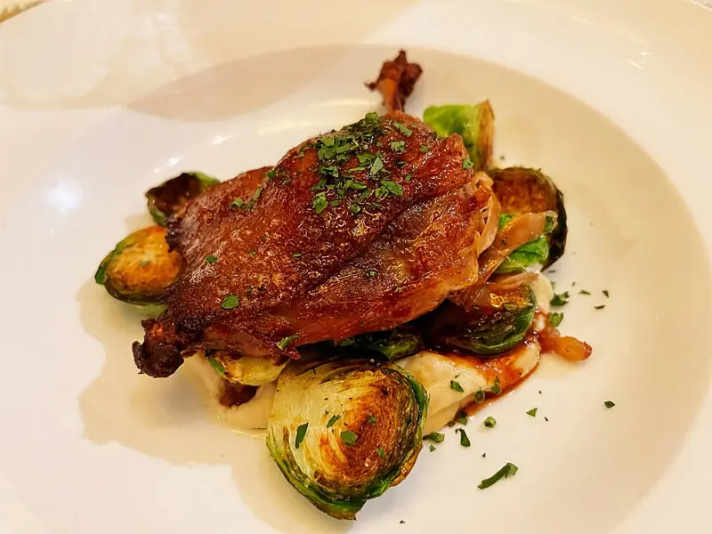

Фото: Missvain, CC BY 4.0

Утка с яблоками в духовке
Целая утка, фаршированная кислыми яблоками и запечённая до румяной корочки
200 мин6 порц.1074 ккал на порциюБ 56 · Ж 90 · У 10Русская кухня
Продукты на 6 порц.
- Утка1 тушка
- Яблоки3 шт
- Чеснок3 зуб.
- Мёд по желанию1 ст. л.
- Горчица по желанию2 ч. л.
- Соль1 ст. л.
- Перец чёрный молотый1 ч. л.
- Вода200 мл
Как готовить
- Утку промойте, обсушите бумажными полотенцами, срежьте лишний жир у хвоста и гузку.
- Натрите тушку снаружи и внутри солью, перцем и давленым чесноком. Лучше оставить в холодильнике на 4-12 часов.
- Кислые яблоки нарежьте дольками без сердцевины и плотно набейте ими брюшко. Зашейте ниткой или сколите зубочистками.
- Положите утку спиной вниз в утятницу или форму, налейте на дно воду. Накройте крышкой или фольгой.
- Запекайте при 180 °C (средний жар) 2 часа, каждые 30 минут поливайте вытопившимся жиром.
- Смешайте мёд с горчицей, снимите фольгу, смажьте утку и запекайте открытой ещё 20-30 минут до тёмно-золотой корочки.
- Проколите ножку в толстом месте: сок должен быть прозрачным. Дайте утке постоять 10 минут перед нарезкой.
Совет. Берите кислые яблоки вроде антоновки: сладкие разваливаются в кашу. Вытопленный жир сохраните, на нём отлично жарить картошку.